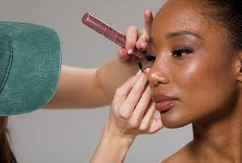
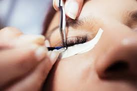
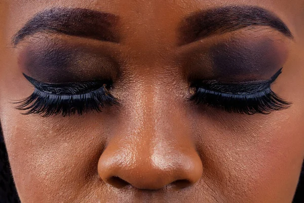
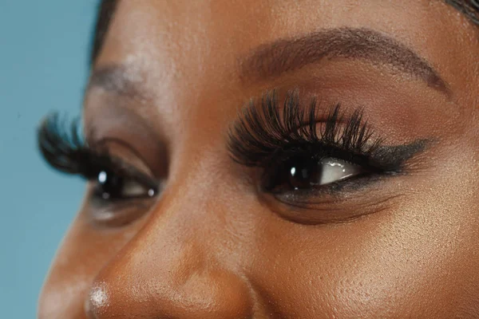
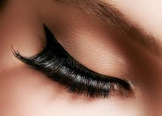
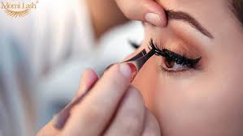
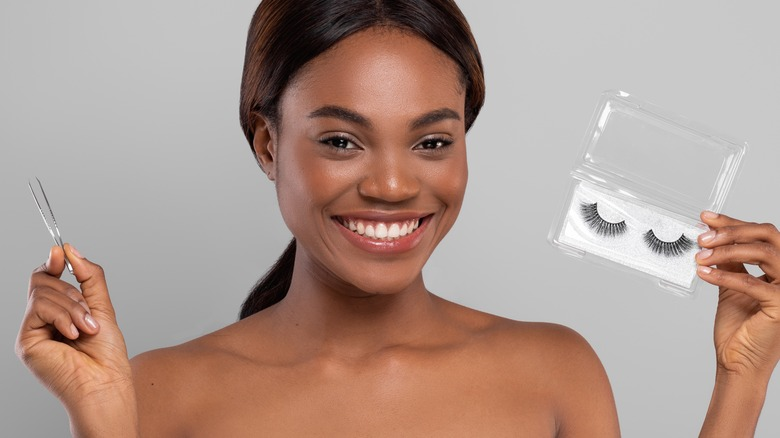
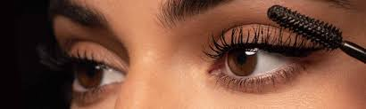

Our Lash Gallery

Classic Lash Extensions
Our Classic Lash Extensions are the perfect choice if you want to enhance your eyes with a natural and timeless look. Each lash is carefully applied to blend seamlessly with your own, giving you that effortless elegance for everyday wear. At Nara Lashes, we believe every blink should leave a lasting impression. Our premium lashes are designed to enhance your natural beauty, giving you effortless elegance and confidence for any occasion. Whether you’re going for subtle sophistication or bold glamour, Nara Lashes delivers the perfect style every time. Step into a world where luxury meets comfort, and let your eyes do the talking.
Book Now
Lash Lift & Tint
For clients who love simplicity, the Lash Lift & Tint gently curls your natural lashes and adds a soft tint, giving you the illusion of longer, darker lashes — all without the need for mascara. Transform your lashes in just one session with our Lash Lift & Tint! Say goodbye to mascara and hello to naturally lifted, beautifully dark lashes that open up your eyes and enhance your look. Quick, safe, and long-lasting, our treatments give you effortless elegance every day. Wake up ready to shine—your lashes, your confidence, your beauty, perfected.
Book Now
Lash Removal Service
When it’s time for a fresh start, our professional lash removal service gently and safely dissolves extensions without harming your natural lashes. Gently, safely, and effectively remove your lash extensions with our professional Lash Removal Service. Protect your natural lashes while getting a clean, fresh start—perfect for switching styles, correcting previous applications, or simply giving your lashes a break. Trust our experts to make the process comfortable, quick, and damage-free, leaving your natural beauty intact and ready for your next stunning look.
Book Now
Before & After Transformation
Our before-and-after transformations showcase the artistry and care we put into every client. See the magic for yourself! Our Before & After Transformations showcase the stunning results of our expert lash services. From natural enhancement to full-glam effects, witness how we elevate your look while keeping your lashes healthy and beautiful. Every transformation tells a story of confidence, style, and flawless results. From subtle definition to bold enhancement, our work speaks for itself.
Book Now
Precision Lash Application
Every lash we apply is done with precision and love. Our skilled lash artists map your eyes, ensuring the perfect style for your face shape and personality. Experience the art of flawless lashes with our Precision Lash Application. Every lash is carefully applied with meticulous attention to detail, ensuring a perfect, natural look that enhances your eyes and elevates your style. Because your lashes deserve nothing less than precision and perfection.
Book Now
Glam Volume Set
Our Glam Volume Set is bold, dramatic, and perfect for special occasions. Multiple lightweight extensions are applied to each lash for the ultimate wow factor. Turn heads with our Glam Volume Set! Designed for those who love bold, full, and luxurious lashes, this service adds dramatic volume while keeping a soft, fluttery look. Perfect for special occasions or everyday glamour, your eyes will make a statement wherever you go.
Book Now
Natural Classic Look
Our Natural Classic Look offers a soft enhancement that feels fresh and elegant. Perfect for first-time lash wearers or those who prefer subtle beauty. Enhance your beauty with our Natural Classic Look. Perfect for those who want subtle, elegant lashes that define your eyes without looking overdone. Soft, delicate, and effortlessly beautiful—your everyday glam, perfected.
Book Now
Our Lash Artists at Work
Behind every flawless set of lashes is a trained artist dedicated to detail. At Nara Lashes, our team combines skill, patience, and artistry to create results that last. Watch the magic happen! Our skilled lash artists bring precision, creativity, and care to every set, ensuring your lashes look flawless and stunning. Experience the artistry behind every blink.
Book Now
Hybrid Lash Style
If you can’t decide between classic and volume, Hybrid Lashes blend both for a customizable, balanced, and stunning look that suits any occasion. Get the best of both worlds with our Hybrid Lash Style! Combining the fullness of volume lashes with the elegance of classic lashes, this look gives your eyes a perfectly balanced, stunning effect that’s both dramatic and natural.
Book Now